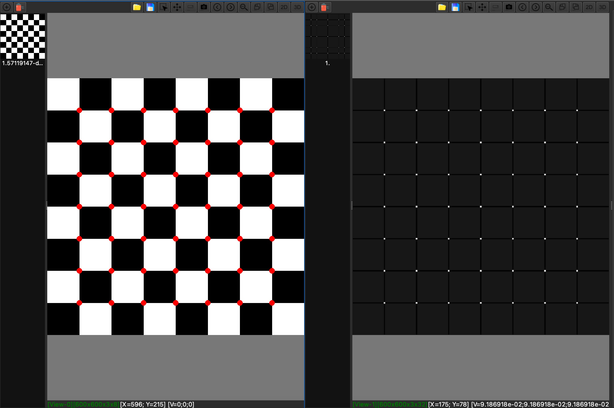
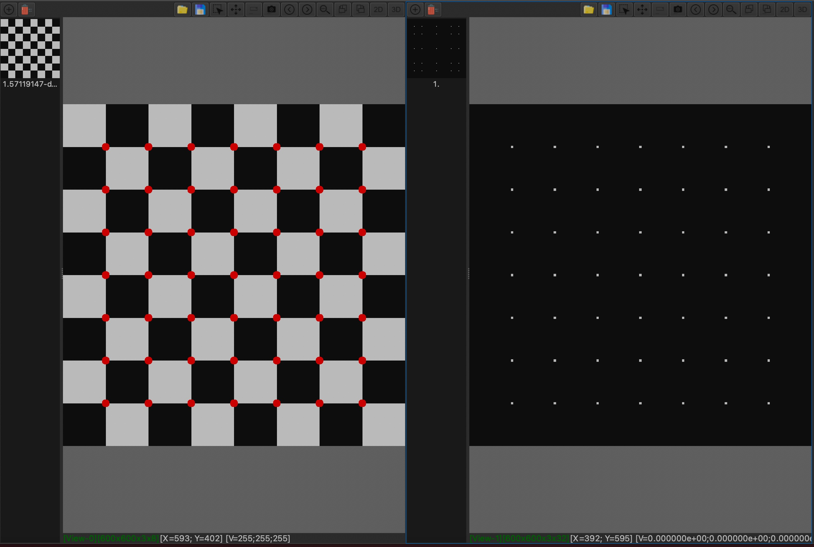
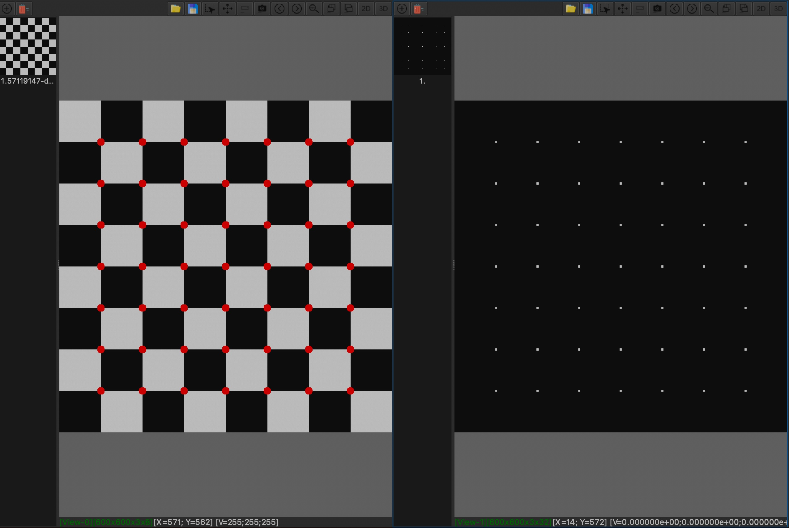

Harris Corner Detector is a good feature detector which used by other feature-based matching algorithms.
A good feature area should be distingush with around area, and invariant in rotation. Therefore, shifting the window in any direction should yield a large change in apperance.
Change of intensity for the shift [u, v]
\[E(v, v) = \sum_{x, y}^{}w(x, y)[I(x + u, y + v) - I(x, y)]^2 \tag{1}\]
\(w(x, y)\) is window function, \(I(x + u, y + v)\) is shifted intensity, \(I(x, y)\) is intensity
Taylor series for 2D functions for first order
\[f(x + u, y + v)=f(x, y) + uf_{x}^{'}(x, y) + vf_{y}^{'}(x, y)\]
Hence, \[\sum_{x, y}[I(x + u, y + v) - I(x, y)]^2\approx\sum_{x, y}[I(x, y) + uI_x + vI_y - I(x, y)]^2 =\sum_{x, y}(u^2I_{x}^2 + 2uvI_{x}I_{y} + v^2I_{y}^2) =\sum_{x, y}\left[\begin{array}{}u & v\end{array}\right]\left[\begin{array}{}I_{x}^2 & I_{x}I_{y}\\ I_{x}I_{y} & I_{y}^2\\\end{array}\right]\left[\begin{array}{}u\\v\end{array}\right] =\left[\begin{array}{}u & v\end{array}\right]\sum_{x, y}\left[\begin{array}{}I_{x}^2 & I_{x}I_{y}\\ I_{x}I_{y} & I_{y}^2\\\end{array}\right]\left[\begin{array}{}u\\v\end{array}\right] \tag{2}\]
From \((1)\) and \((2)\), \[E(u, v)\approx\left[\begin{array}{}u & v\end{array}\right]\ M \left[\begin{array}{}u\\v\end{array}\right]\]
\[M=\sum_{x, y}w(x,y)\left[\begin{array}{}I_{x}^2 & I_{x}I_{y}\\ I_{x}I_{y} & I_{y}^2\\\end{array}\right]\]
Window function \(w(x,y)\) can be 1 for simple case.
Finally, We can measure responding value of corner by below methods
Harris & Stephens (1988): \(R=\det(M) - k\operatorname{trace}(M)^2, k = 0.04-0.06\)
Kanade & Tomasi (1994): \(R=min(\lambda_{1}, \lambda_{2})\)
Nobel (1998): \(R=\frac{det(M)}{trace(M) + \epsilon}\)
Below is demo video by XImageTool
Harris & Stephens (1988): \(R=\det(M) - k\operatorname{trace}(M)^2, k = 0.04-0.06\)
Kanade & Tomasi (1994): \(R=min(\lambda_{1}, \lambda_{2})\)
Nobel (1998): \(R=\frac{det(M)}{trace(M) + \epsilon}\)
In order to improve result, Non Maximal Suppression with size 3x3 can be apply to corner map image.